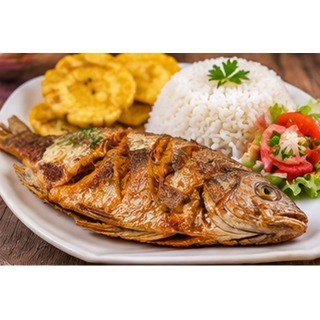

Reseña del cantón
Buena Fe, conocida también como San Jacinto de Buena Fe, es un cantón con fuerte actividad agrícola y comercial. Sus tierras favorecen la producción de cacao, banano y otros cultivos tropicales. La conexión con diversas vías de transporte facilita el intercambio de productos y el movimiento de personas. Las comunidades mantienen costumbres rurales y tradiciones propias de Los Ríos.
Población
74.410 habitantes (Censo de Población y Vivienda 2022).
Parroquias
San Jacinto de Buena Fe (cabecera cantonal) y Patricia Pilar.
Economía y cultura
La producción agrícola y el movimiento de mercancías forman parte de la actividad diaria del cantón. Sus paisajes de cultivos y su ubicación en las vías regionales muestran su importancia para el norte provincial.
Alcaldesa
Diana Anchundia Yépez — período 2023–2027.

Fuente: Directorio oficial de alcaldes y alcaldesas de AME.
Platos típicos
Cueritos, muchines, tilapia frita y cazuela de pescado.

Estas preparaciones se documentan como parte de la gastronomía local. Su disponibilidad y preparación pueden variar entre comunidades.
Lugares turísticos
Riberas y balnearios de ríos de la zona, además de fincas y paisajes agrícolas que permiten conocer la producción local.
Mapa del cantón
Mapa de Google Maps centrado en el cantón: